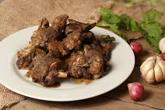
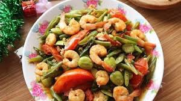
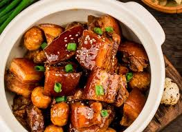
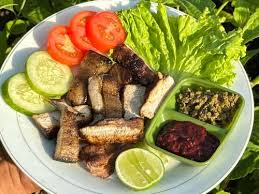
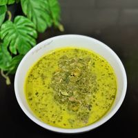
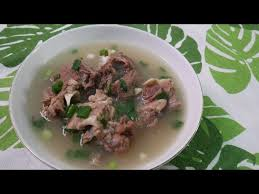
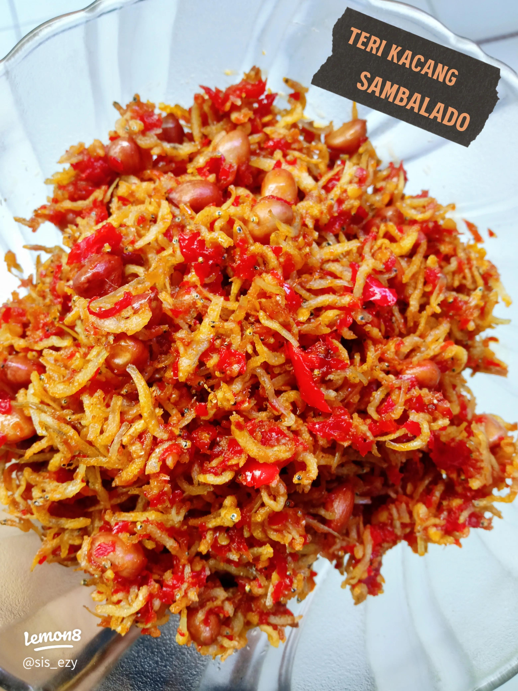
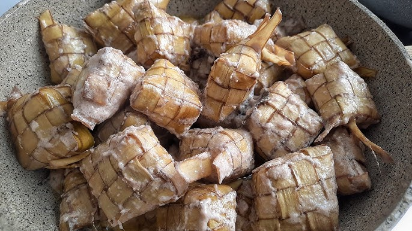
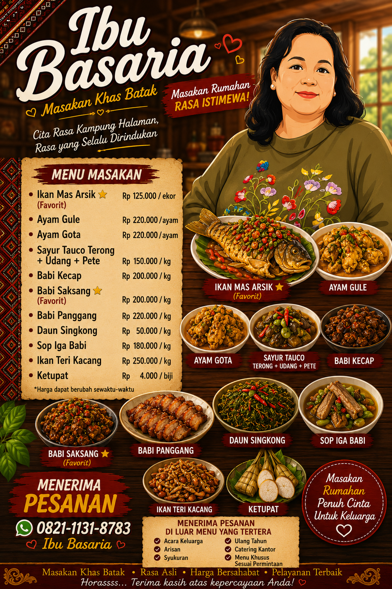

Ikan Mas Arsik ⭐
Ikan mas bumbu arsik khas Batak.
Rp 125.000 / ekor PesanPilih menu khas Batak rumahan dari Ibu Basaria.
Ikan mas bumbu arsik khas Batak.
Rp 125.000 / ekor Pesan
Ayam kuah santan dengan rempah pilihan.
Rp 220.000 / ayam Pesan
Menu khas Batak dengan cita rasa autentik.
Rp 220.000 / ayam Pesan
Sayur tauco gurih dengan terong, udang, dan pete.
Rp 150.000 / kg Pesan
Babi masak kecap dengan rasa manis gurih.
Rp 200.000 / kg Pesan
Menu favorit khas Batak dengan bumbu kuat.
Rp 200.000 / kg Pesan
Babi panggang gurih, cocok untuk acara keluarga.
Rp 220.000 / kg Pesan
Sayur daun singkong khas rumahan.
Rp 50.000 / kg Pesan
Sop iga hangat dengan kuah gurih.
Rp 180.000 / kg Pesan
Ikan teri kacang renyah dan gurih.
Rp 250.000 / kg Pesan
Tambahan untuk melengkapi menu pesanan.
Rp 4.000 / biji Pesan
Bisa request menu lain yang belum tersedia di daftar menu. Silakan tulis pesanan lengkap saat mengisi form.
Harga menyesuaikan pesanan Request Menu